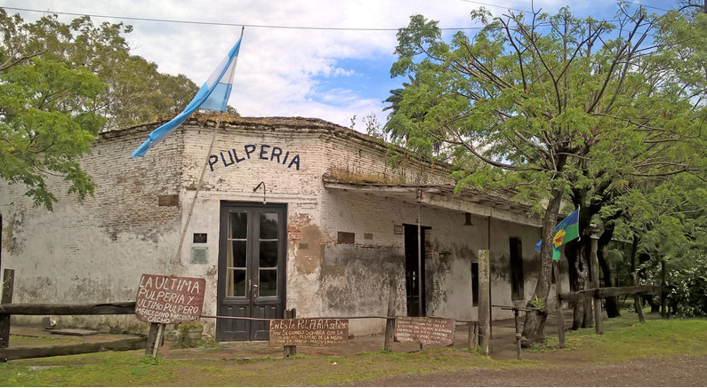

Pueblos Argentinos
Este pueblo pertenece al departamento de Futaleufú, de la mencionada provincia patagónica. Su fundación fue el 25 de noviembre de 1885 y según el censo del 2010, contaba en ese momento con poco menos de 8.000 habitantes.
